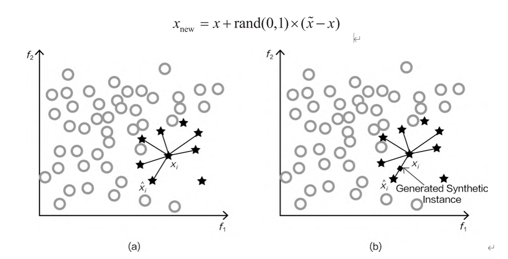
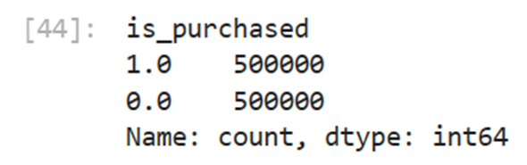
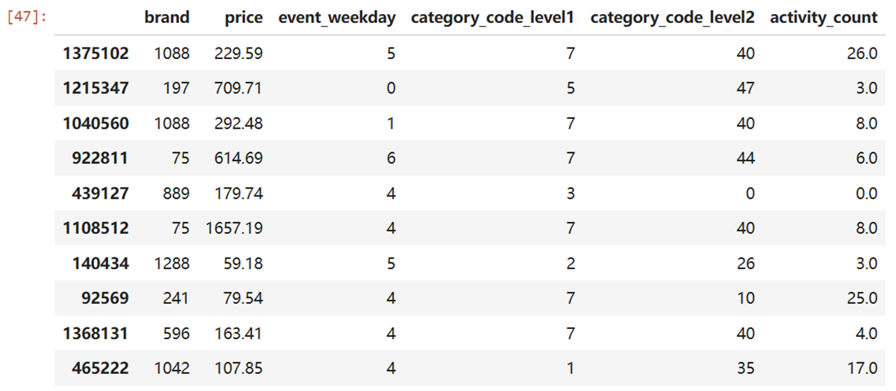
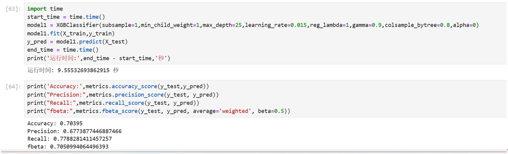
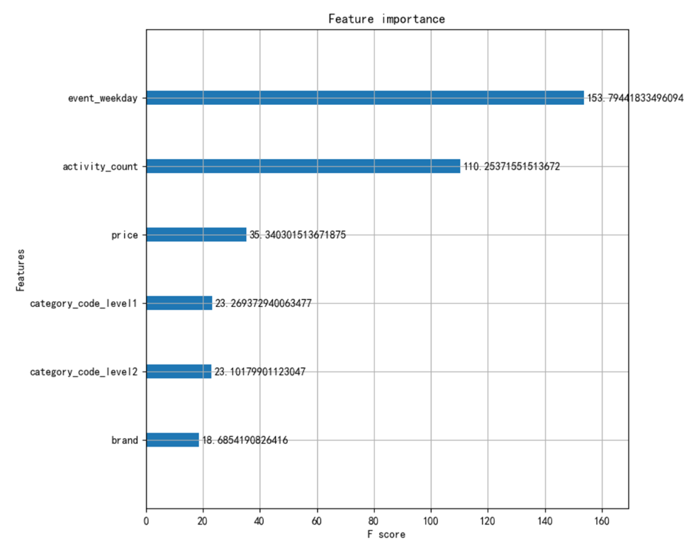
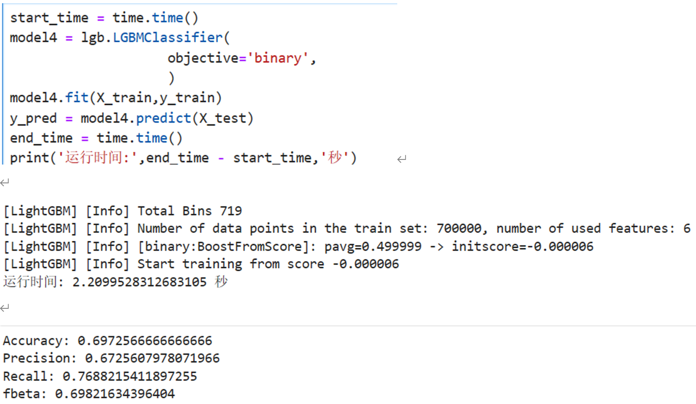

首先我们对数据进行了下采样，过采样两种方法。
如何才能让异常样本与正常样本一样多呢？这里需要对少数样本进行生成，需要采用一些策略，最常用的就是 SMOTE 算法，其流程如下。
第一步：对于少数类中每一个样本 x，以欧式距离为标准，计算它到少数类样本集中所有样本的距离， 经过排序，得到其近邻样本。
第二步：根据样本不平衡比例设置一个采样倍率 N，对于每一个少数样本 x，从其近邻开始依次选择 N 个样本。
第三步：对于每一个选出的近邻样本，分别与原样本按照如下的公式构建新的样本数据。
SMOTE过采样算法通过添加少数类样本来平衡类别分布，降低过拟合风险的同时提高模型的泛化能力。（2）但过采样会会导致建模时间过长，且效果提升优势不明显，因此在此只对过采样做简易展示,在经过对比后，本项目最终采用下采样方法进行数据处理。 在下采样方法中，本项目选取50000作为采样完成的样本数。
随后，我们对数据进行了features&labels分离、编码，训练集和测试集的划分等操作。
接下来是建模过程，本项目以XBGoost,LightGBM作为主要模型进行预测，而通过随机森林，逻辑回归等经典模型进行对比。
首先我们使用XBGoost模型进行建模，在建模过程中，我们使用了库RandomizedCV进行调参，并根据得到的最佳参数进行建模，并输出了完成建模的时间和一些基础的评价参数。
接着我们使用了XGBoost自带的plot_importance()函数，从中我们可以直观的看到每一个特征的重要程度，辅助商家进行调整。
接下来我们使用了LightGBM模型进行建模，同样输出了建模完成的时间和参数，可以看到，该模型的速度是XGBoost的1/5，在极大的提高了模型的运算速度的同时保证了准度，可以看到LightGBM在更高维，更庞大的数据库中能具有更为优异的表现。而之所以LightGBM能有比XGBoost更快的速度，原因主要在于XGBoost采用的是level-wise tree grow的方法，而LightGBM则采用的是leaf-wise tree grow的方法。除此之外，LightGBM通常被用来处理大规模数据，而它在处理小型数据时很容易出现过拟合的状况。
相比之下，两个经典模型就有很大的不足了，其中随机森林在时间上耗费巨大，且占用大量内存，本项目使用的电脑为联想拯救者Y9000P，在(n_estimators >20)时多次实验均出现了内存报错而代码终止的状况。而逻辑回归模型则存在预测效果差的问题，且运行时间在15秒左右。